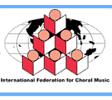
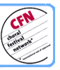
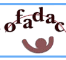
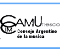
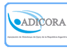

Relaciones Institucionales
La Fundación “C.I.C.” trabaja en red con las organizaciones corales más importantes del país y del mundo. Estas son las instituciones cuyos logos acompañaban la cabecera del sitio en 2009.

FIMC / IFCM
Federación Internacional para la Música Coral (International Federation for Choral Music). Es el marco mundial en el que actúa la Fundación.

CFN — Choral Festival Network
Red internacional de festivales corales. La Fundación está afiliada a la CFN dentro del ámbito de la FIMC.

OFADAC
Organización Federada Argentina de Actividades Corales. La Fundación es Miembro Fundador.

CAMU
Consejo Argentino de la Música, miembro del Consejo Internacional de la Música (CIM-UNESCO). La Fundación es socia.

ADICORA
Asociación de Directores de Coro de la República Argentina.